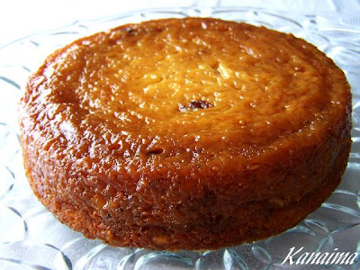

Torta de pan a la venezolana
En Venezuela tenemos muchos postres que tienen su origen en otras latitudes. Uno de ellos es la torta de pan, herencia de España. La diferencia está en la adaptación que se hizo de los ingredientes: si no se encontraba alguno, había que solucionar con lo que estaba al alcance de la mano. La clave de esta deliciosa torta de pan, es el queso llanero, que le da un toque saladito y que, contrastado con las pasitas, hacen de su degustación toda una experiencia.
Ingredientes
- 1/2 kilo de pan duro de 3 a 4 días
- 4 tazas de leche
- 4 huevos
- 1/2 taza de mantequilla
- 3/4 de kilo de azúcar
- 175 gramos de queso blanco duro, tipo llanero, rallado
- 1/2 cucharada de esencia de vainilla
- 1/2 taza de pasas
- Miel o melado de papelón para bañar la torta al final
Preparación
- Se corta el pan en pedazos pequeños, de unos 4 centímetros. Se pone en un envase a remojar el pan en la leche, se revuelve con frecuencia. Se mezcla o se corta con un mezclador de pasta.
- Se precalienta el horno a 40ºF.
- Se engrasa un molde circular para hornear de 30 x 6 cm.
- A la mezcla del pany la leche se le agregan los huevos, la mantequilla, el azúcar, el queso y la vainilla. Se revuelve bien hasta tener una mezcla gruesa. Se le revuelven las pasas y se vierte la preparación en el molde.
- Se mete el molde en el horno y se hornea por 1 hora.
- Se saca del horno y se deja enfriar sobre una rejilla. Se baña con la miel o melado de papelón. Se saca del molde y se sirve a temperatura ambiente.